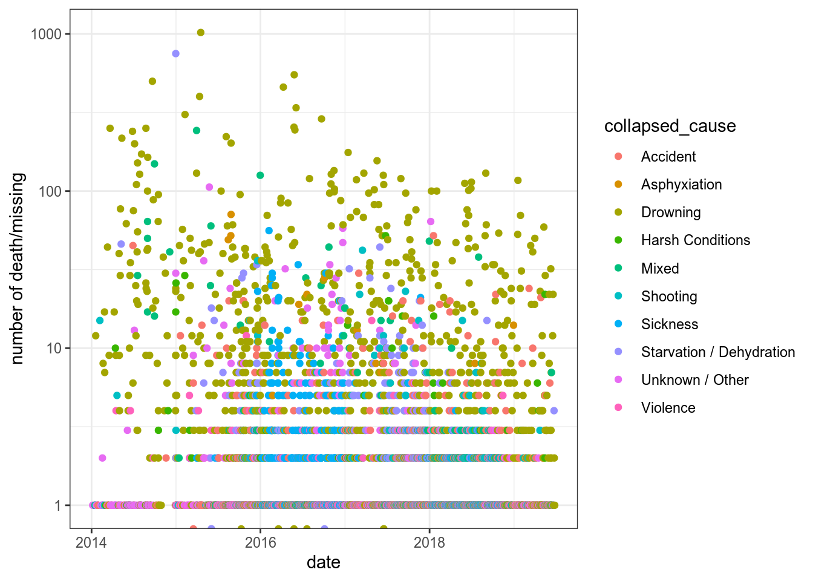

11 Работа со временем: lubridate
Мы обсуждали, что переменные бывают разные. О них, возможно, следует думать как о шкале:

Кажется, что время – просто обычная числовая переменная, на которой определены все обычные операции сложения вычитания и т. п. Однако стоит держать в голове несколько фактов:
- Не каждый год содержит 365 дней. Существуют високосные года.
- Не каждый день содержит 24 часа. Во многих странах используют переход на летнее и зимнее время.
- Не в каждой минуте 60 секунд. Существуют дополнительная секунда, которую добавляют чтобы компенсировать замедление во вращении земли (тогда после секунды 23:59:59 идет секунда 23:59:60).
Все это мелочи учтены в пакете lubridate, созданном для работы со временем в R (https://rawgit.com/rstudio/cheatsheets/master/lubridate.pdf, туториал доступен здесь и по команде vignette("lubridate")). Первые команды, которые нужно изучить:
Attaching package: 'lubridate'The following object is masked from 'package:base':
date[1] "2020-01-14"[1] "2020-01-14 18:24:18 MSK"Как видно, из этих функций в R можно работать как с датами, так и с временем. В качестве иллюстрации мы будем использовать датасет flights из пакета nycflights13, в котором содержатся данные полетов из Нью Йорка в 2013 года.
11.1 Создание даты
Самый простой способ получить дату — это преобразовать строку в формат даты, для этого надо просто упорядочить y (year), m (month) и d (day) в команде:
[1] "2020-01-21"[1] "2020-01-21"[1] "2020-01-21"[1] "2020-01-21"[1] "2020-01-21"[1] "2020-01-21"[1] "2020-01-21"Команды понимают не только английский (хоть и с трудом):
[1] "2020-01-21"[1] "2020-01-21"[1] NA[1] "2020-01-21"[1] NA[1] "2020-01-21"[1] "2020-01-21"Аналогично сделаны команды состоящие из h, m, s:
[1] "20H 1M 2S"[1] "20H 1M 0S"[1] "23M 59S"Также существует команда make_datetime(), которая позволяет сделать дату из нескольких переменных:
11.2 Извлечение компонентов даты
Для извлечения компонентов даты используются функции year(), month(), week() (номер недели в году), mday() (day of the month), wday() (номер дня в неделе), yday() (номер дня в году), hour(), minute() и second():
[1] "2013-01-01 05:00:00 EST"[1] 2013[1] 1[1] Jan
12 Levels: Jan < Feb < ... < Dec[1] January
12 Levels: January < ...[1] янв
12 Levels: янв < фев < ... < дек[1] 1[1] 1[1] 3[1] Tue
7 Levels: Sun < Mon < ... < Sat[1] Tuesday
7 Levels: Sunday < ... < Saturday[1] Вт
7 Levels: Вс < Пн < ... < Сб[1] 1[1] 5[1] 0[1] 0Так же есть функция leap_year(), которая сообщает информацию, является ли выбранный год високосным:
[1] FALSE[1] TRUE
Постройте график распределения полетов по дням недели из датасета flights пакета nycflights13.
11.3 Операции с датами
Если взять две даты, то можно узнать разницу между ними и т. п.:
Time difference of 2 daysTime difference of -2 daysОбратите внимание на результат работы этого выражения:
[1] "3H -10M 0S"Видимо, почему-то в таком использовании происходит поэлементная операция с часами, минутами, и секундами, так что в результате получаются отрицательные минуты. Однако, если использовать полные даты, то этого эффекта нет:
Time difference of 2.833333 hours[1] "2020-01-21 02:50:00 UTC"Также существует функция difftime(), которая позволяет настраивать единицы, в которых выдается результат:
Time difference of 170 minsTime difference of 2.833333 hoursУ меня есть шенгенская мультивиза на 90 дней. Я совершил несколько поездок в Европу и записал их в этот датасет. Определите, сколько дней я еще могу находиться в Евросоюзе?
Однако простые даты, не являются временными отрезками, так что их нельзя складывать, вычитать, умножать и т. д. Для удобства операций в lubridate вводится несколько сущностей:
- periods — промежутки времени, которые игнорируют нерегулярности во времени, сразу прибавляя 1 к соответствующему разряду, вводятся функциями
years(),months(),weeks(),days(),hours(),minutes(),seconds(),period() - duration — промежутки времени, которые учитывают нерегулярности во времени, добавляя стандартную длительность единицы, вводятся функциями
dyears(),dweeks(),ddays(),dhours(),dminutes(),dseconds(),duration()

Рассмотрим несколько сложных случаев:
- високосный год
[1] "2020-03-01"[1] "2020-02-29"- переход на летнее время
[1] "2020-03-08 13:00:00 EDT"[1] "2020-03-08 14:00:00 EDT"- переход на зимнее время
[1] "2020-11-01 13:00:00 EST"[1] "2020-11-01 12:00:00 EST"Последняя операция с датами, которую мы рассмотрим — округление:
floor_date()— округление в меньшую сторонуround_date()— математическое округлениеceiling_date()— округление в большую сторону

[1] "2020-01-01"[1] "2020-01-01"[1] "2020-02-01"[1] "2020-02-01"[1] "2021-01-01"11.4 Визуализация времени: данные Левада-центра
Пакет tidyverse понимает переменные типа дата, и позволяет их фильтровать и визуализировать:
flights %>%
mutate(end = time_hour + dminutes(air_time)) %>%
filter(end < ymd("2013-01-02")) %>%
ggplot(aes(time_hour, end))+
geom_point(alpha = 0.2)
Однако ко переменным со врменем не всегда относятся аккуратно. Рассмотрим график с сайта Левада-центра — российской негосударственной исследовательской организации, которая проводит социологические и маркетинговые исследования (график взят отсюда):

На первый взгляд, в этом графике нет ничего странного, однако если присмотреться к динамической версии на сайте Левада-центра, можно обнаружить, что на идущие подряд измерения расположены на одинаковом расстоянии друг от друга, например, 05.2014, 07.2014, 11.2014. Вот здесь можно скачать данные, по которым строился этот график. Вот как он выглядит, если считать временную переменную как время
levada <- read_csv("https://raw.githubusercontent.com/agricolamz/DS_for_DH/master/data/2019.01_levada_countries.csv")
levada %>%
mutate(date = str_c("1-", date),
date = dmy(date)) %>%
filter(towards == "USA") %>%
pivot_longer(names_to = "answer", values_to = "number", good:bad) %>%
ggplot(aes(date, number, color = answer))+
geom_line()+
labs(x = "", y = "", caption = "данные Левада-центра")+
scale_y_continuous(limits = c(0, 100))+
theme(legend.position = c(0.1, 0.9), legend.title = element_blank())На графике теперь видно, насколько регулярно проводились опросы: в начале 90-ых опросы проводились реже, потом часто, потом в районе 2010 года был перерыв. График Левада-центра можно оправдать тем, что они представляют данные от замера к замеру, так что по оси x находится как бы категориальная переменная со значениями замер 05.2014, замер 07.2014, замер 11.2014 и т. д. Однако это совсем неочевидно из графика.
Используя весь датасет Левада-центра, постройте следующий график.